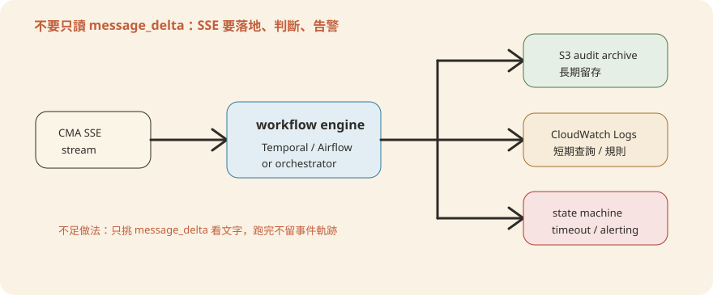

Chapter 11維運、監控與成本
CMA（Claude Managed Agents，Claude 託管代理）上線之後，「跑得動」跟「能維運」是兩回事。這一章處理三個很實際的問題：agent 半夜跑壞了，誰的手機會響？token 帳單暴增，怎麼查出是哪支 agent、哪一步燒的？改一版 skill，怎麼在不停掉現有服務的前提下換血？讀完本章，你應該能畫出自己銀行版本的維運界線圖、接上三層可觀測性、算出每支 agent 的成本歸因，手上還有一份能直接照抄的事件應變 runbook（應變手冊）。
1. 維運界線：Anthropic 管什麼、銀行管什麼
維運的第一件事，是先畫清楚「誰管哪一段」。你可以把整套系統想成用電：Anthropic 像電力公司，負責供電到你家電表；電表以後的配線、開關、電器，是你家自己的事。電力公司不會因為你家跳電而派人來修配線。
換成技術上精確的說法：CMA 本身（模型推論、agent 執行環境）跑在 Anthropic 雲端，透過 Anthropic 的 API（應用程式介面）呼叫——具體來說是 POST /v1/agents，帶 beta header managed-agents-2026-04-01。而大家常說的「部署在 AWS」，指的是周邊系統：呼叫端後端、MCP servers、編排器（scripts/orchestrate.py）、資料源、密鑰與 VPC 網路，全部在銀行自己的 AWS 帳號裡。
這條線直接決定「誰的 on-call 手機會響」。模型推論掛了，算 Anthropic 的 SLA（Service Level Agreement，服務等級協議）；MCP server 掛了、編排器卡住、密鑰過期，算銀行自己的 SLA。兩邊都要有人扛，缺一邊就是沒人接的半夜警報。
┌────────────────────────────────────────────────────────────────┐
│ Anthropic 雲端 —— Anthropic 的維運責任 │
│ ┌──────────────────────────────────────────────────────────┐ │
│ │ 模型推論（claude-opus-4-7 …） │ │
│ │ agent 執行環境（session、steering、SSE 事件流） │ │
│ │ callable_agents 的委派執行（orchestrator → leaf worker） │ │
│ └──────────────────────────────────────────────────────────┘ │
│ ▲ POST /v1/agents ／ SSE 事件流回傳 │
└─────────────────────┼────────────────────────────────────────────┘
│
┌─────────────────────┼────────────────────────────────────────────┐
│ 銀行的 AWS 帳號 —— 銀行自己的維運責任 │
│ ┌────────────┐ ┌────────────┐ ┌──────────────┐ ┌─────────────┐ │
│ │ 呼叫端後端 │ │ 編排器 │ │ MCP servers │ │ 密鑰／網路 │ │
│ │(觸發 run、 │ │orchestrate.│ │(internal-gl, │ │ANTHROPIC_ │ │
│ │ 收 SSE 事件)│ │py 或銀行自 │ │ subledger, │ │API_KEY、 │ │
│ │ │ │ 己的事件匯流│ │ screening…) │ │*_MCP_URL、 │ │
│ │ │ │ 排/Temporal │ │ 對外連 factset│ │VPC/防火牆 │ │
│ └────────────┘ └────────────┘ └──────────────┘ └─────────────┘ │
└────────────────────────────────────────────────────────────────┘
一句話總結：維運責任是兩份合約——模型推論歸 Anthropic，AWS 上的周邊系統（MCP、編排器、密鑰、網路）歸銀行，值班表要照這條線各排各的。
2. 可觀測性三層
可觀測性（observability）聽起來抽象，其實就是「值班室牆上要掛哪幾面儀表板」。一個 run 從觸發到交付會經過三層系統，每一層要看的指標完全不同：機台面板（agent 這次執行發生了什麼）、水電管線（AWS 上的周邊系統健不健康）、成品抽檢（產出的東西還對不對）。三面板混在一起看，最常見的後果就是「技術指標全綠、業務結果卻悄悄劣化」這種事故被漏掉。
這一層是「機台的即時面板」：看這一次 run 到底發生了什麼。CMA 的回傳管道是 SSE（Server-Sent Events，伺服器推送事件）事件流，以一個 session（工作階段）為單位，把工具呼叫、中間輸出、最終輸出一路推回來。
先講結論：repo 附的 scripts/orchestrate.py 只是參考實作，不能直接當監控上線。它的檔頭寫明「REFERENCE ONLY — replace with your firm's workflow engine（Temporal、Airflow、Guidewire event bus）」。它示範的是事件迴圈的「形狀」，不含落地與告警。銀行要在這個迴圈外面自己補三件事：① 落地（每個事件原樣存檔，供覆核與稽核）、② 狀態機（判斷 run 有沒有正常走完，逾時本身就是異常）、③ 失敗告警（失敗的 run 要主動叫人，不能靜靜結束）。KYC 開戶審查、總帳對帳這種 🔴 高風險 agent，一個失敗的 run 不該無聲無息地消失——它代表某一批交易或某一個開戶案件卡在了流程裡。
參考實作消費事件流的核心長這樣：
with client.beta.agents.sessions.stream(session_id=source_session_id) as stream: # type: ignore[attr-defined]
for event in stream:
if event.type != "message_delta" or not getattr(event, "text", None):
continue
handoff = extract_handoff(event.text)
...注意它只挑 message_delta 這一種事件、其他全部略過——這正是它不能直接當監控的原因。三件事的落地建議：① 每個事件（工具呼叫、中間輸出、最終輸出）原樣寫進 S3（長期歸檔、供覆核與稽核）與 CloudWatch Logs（短期查詢、接告警規則）；② 對 event.type 做完整的狀態機判斷，不是只挑 message_delta——一個 run 沒有在預期時間內收到「結束」事件，本身就要視為異常；③ run 失敗（逾時、工具呼叫連續出錯、回傳格式驗證失敗）要送出告警，而不是靜靜結束。

這一層是「水電管線」：看銀行自己 AWS 帳號裡的周邊系統健不健康，跟 CMA 本身無關。重點監控對象是各個 MCP server——agent 對接行內系統的轉接頭，管線塞住了，機台再正常也做不了事。
正式環境的標準組合有三樣：① 健康檢查——ALB（Application Load Balancer）對每個 MCP server 做 target health check；② 延遲與錯誤率——CloudWatch 量測回應時間與 5xx 錯誤率；③ 佇列深度——編排器那一側排隊中的 run 數量。佇列深度是「MCP 變慢但還沒完全掛掉」的先行指標，比等到錯誤率飆高才發現要早得多。另外，對帳類 agent 一次 run 通常要連續打很多次查詢，所以總帳類 MCP 要盯的不只是「活著」，還有「回應時間有沒有拉長」。
本機開發時，MCP servers 是一組 mock（假資料替身），由 mock-mcp/run_all_http.py 這支啟動器統一拉起，九個 server 各自綁一個固定 port：
SERVERS = {
"internal-gl": 8001, "subledger": 8002, "portfolio": 8003, "nav": 8004,
"crm": 8005, "screening": 8006, "capiq": 8007, "factset": 8008, "daloopa": 8009,
}這支腳本自己用 p.poll() 檢查每個子行程有沒有意外退出——這就是開發環境等級的「健康檢查」。正式上線後，這些 server 換成部署在 AWS 上的真實服務（ECS/EKS 上的容器，或直接接供應商網址），監控就換成上面說的 CloudWatch 組合。另一個細節：gl-reconciler 的 agent.yaml 裡，internal-gl／subledger 兩個 MCP 都標注 enabled: true # read-only server——這兩個是總帳類系統，也就是主線說的「延遲比死活更早示警」的典型對象。
這一層是「成品抽檢」：看產出的東西是不是還對。它是三層裡最容易被忽略、卻最先反映問題的一層。技術層全綠，不代表業務結果正常——模型行為可能因為上游資料格式微調、skill 版本更新後的邊界案例，或是 prompt 沒動、行為卻慢慢漂移（prompt drift）而悄悄變差。
建議至少盯三個數字。每日處理件數：跟歷史基準比，忽然掉一半通常是上游資料源或觸發流程壞了，不是 agent 的問題。handoff 率：第 8 章談的 handoff_request 觸發頻率，忽然飆高可能代表某個 agent 開始把它本來能處理的案子都往外推。人審駁回率：🔴 高風險 agent 產出的 ./out/ 報告被覆核人員退回的比例——這是品質劣化最敏感的先行指標，通常比「模型出錯」的告警還早幾天亮起來。
一句話總結：值班室要掛三面儀表板——agent 執行層（SSE 事件落地＋狀態機＋告警）、AWS 基礎層（MCP 健康、延遲、佇列深度）、業務層（件數、handoff 率、人審駁回率），缺一面就會漏掉一種事故。
3. 成本管理：token 歸因與模型選擇
先講結論：帳單要能拆到「每支 agent、每次 run」，否則暴增時查不出兇手。CMA 的帳單照 token 用量算——token 是 LLM（大型語言模型）計費的基本單位，模型每讀寫一段文字都在跳表，就像水電表的度數。多代理架構下最容易踩的坑，是整棟大樓只裝一顆總表：只看得到總帳單，看不出是哪支 agent、哪一次 run、哪一個葉子工人燒的。
歸因至少要拆兩個維度，等於幫每層樓、每個房間裝分表。per-agent：哪支 named agent 的月度 token 用量最高。per-run：同一支 agent 裡，是不是某幾次 run 異常地長——例如 gl-reconciler 的 critic 子代理若陷入重複覆核循環，單次 run 的 token 用量會遠高於正常值。做法不用另建一套計量系統：沿用第 2 節「Agent 執行層」落地的事件流，落地時把 run_id、agent slug、callable_agent 名稱一起記進 CloudWatch Logs 的結構化欄位，之後用查詢語言就能直接切維度算總量。
模型選擇是成本槓桿裡最直接的一項。目前這份 repo 裡，全部十支 named agent、以及底下所有 subagents/*.yaml 的葉子工人，model: 欄位一致寫死 claude-opus-4-7。這留了一塊沒動用的省錢空間：model: 是每個 yaml 檔各自的欄位，不是全域設定。理論上可以只把某個葉子工人換成較小、較便宜的模型單獨測試，不影響其他子代理。哪些工人是候選？看兩個特徵：① 輸出有 output_schema 把關——就算換小模型品質有落差，驗證這道閘還在，壞掉的輸出進不了下一步；② 任務本身是窄範圍抽取或分類，不需要跨文件的長鏈推理。反過來，要綜合多方結果做最終判斷、又唯一持有 Write 權限的工人，不建議急著降規格。
以 gl-reconciler/subagents/reader.yaml 為例：這個工人只做「讀取未受信任文件、吐出 schema 驗證過的 JSON」，而且 scripts/validate.py 會在 orchestrator（主代理）看到輸出之前，先做長度與字元類別校驗——完全符合上面兩個特徵。同類型的還有 doc-reader（KYC）、ledger-reader（月結）：這批「讀取＋結構化輸出」的葉子工人，是換模型實驗最該優先試的對象。相反地，escalator／resolver 這種唯一持有 Write 權限、要做最終判斷的工人，就是主線說的「不建議急著降規格」那一類。
一句話總結：把 token 當水電度數管——per-agent、per-run 兩層分表從事件流落地欄位免費長出來；model: 是逐檔欄位，窄任務、有 schema 把關的葉子工人是換小模型的優先候選。
4. 更新與發布維運
第 2 章與 docs/TechSummary.md 第四節談過的維護紀律——改真本 → sync → check——是開發期流程；其中 check 這一步會驗出 agent 包副本與真本之間的漂移（drift）。上生產環境要在後面再接四步，變成一條完整的七步發布線：
編輯
plugins/vertical-plugins/<vertical>/skills/<skill>/SKILL.mdpython3 scripts/sync-agent-skills.py 覆蓋各 agent 包副本python3 scripts/check.py 驗 manifest、驗路徑、驗漂移deploy-managed-agent.sh <slug> --dry-run 看展開後的 API 載荷，不真的送出正式跑
deploy-managed-agent.sh <slug>，POST /v1/agents 拿到新的 agent id拿
steering-examples.json 的範例事件跑一輪，核對輸出與人審結果把呼叫端的 slug→agent_id 映射指到新 id，舊 id 先保留不刪
第 4 步是這條線上最便宜的保險。dry-run（演練模式）就像上線前先「試印一張申請書」：把最後要送出的東西完整印出來看，但不真的送件。發布前用它確認兩件事：system（系統提示）有沒有正確內嵌新版 SKILL.md 的內容；callable_agents 的委派結構有沒有跟預期一致。這比等到正式部署完才發現載荷不對，划算得多。第 6 步的驗證，則是拿每支 agent cookbook 附的範例 steering event（轉向事件）實跑一輪，讓人核對結果。
deploy-managed-agent.sh 在 dry-run 模式下，會把 skill 上傳、子代理建立這些會打真實 API 的步驟，全部改成回傳假值（DRYRUN_<name>），然後只把展開後、真正要送給 POST /v1/agents 的 JSON 印出來——整個過程不觸發任何真實 API 呼叫，所以隨便跑、不用錢也不留痕。
正式部署前，還要先 export 兩類環境變數：API 金鑰，以及各 MCP server 的網址佔位。這段是可以直接照抄的操作範例：
# 先看載荷，不送出
scripts/deploy-managed-agent.sh gl-reconciler --dry-run
# 確認沒問題後才正式部署
export ANTHROPIC_API_KEY=sk-ant-...
export GL_MCP_URL=... SUBLEDGER_MCP_URL=...
scripts/deploy-managed-agent.sh gl-reconciler
# 輸出：deployed / agent id: <id> / cookbook: <repo>/gl-reconciler / console 連結跑完你會拿到一個新的 agent id——注意，是「新的」。這正是回滾策略的根基。
回滾策略建立在這支腳本一個容易被忽略的事實上：它每次執行都是對 /v1/agents 發一次全新的 POST，不是「更新既有 agent」。所以每次部署都會拿到一個新的 agent id；只要你沒有主動棄用，舊 id 會一直保持可呼叫。這代表回滾不需要任何「復原版本」的操作。你唯一要管理的狀態，是自己那一層 slug→agent_id 的對照表——就是 scripts/orchestrate.py 裡 agent_ids: dict[str, str] 那個映射的生產版本。新版本驗證有問題？直接把映射切回舊 id，呼叫端完全無感。等新版本確認穩定，再考慮汰除舊 id。這比「在同一個 agent 上做版本回退」簡單很多；代價是你要自己維護這份映射表，並且記得舊 id 何時可以真正棄用。
一句話總結：生產發布是七步線（改真本 → sync → check → dry-run → deploy → 驗證 → 切換）；每次 deploy 都產生新 agent id，回滾就是把自己那層 slug→agent_id 映射切回舊 id，不是版本復原。
5. 事件應變 Runbook 骨架
以下四種事件是 CMA 生產環境最常見的異常類型。每一種都給一份可以直接照抄、再依銀行自己的工具鏈填空的處置骨架。共通原則只有一條：先止血（暫停觸發、縮小影響），再查因，最後回填補跑——順序不要顛倒。
🔴 MCP server 掛了（例如 internal-gl 連不上）
- 確認範圍：是單一 MCP（如
internal-gl）還是整組 AWS 網路/VPC 出問題——先查 ALB target health，再查該 server 所在的 ECS/EKS 服務狀態。 - 立即動作：暫停會用到這個 MCP 的 agent 觸發（本例是
gl-reconciler、month-end-closer），避免大量 run 卡在逾時、堆積編排器佇列。 - 檢查是否為單純的網路/憑證問題（如
${GL_MCP_URL}指向的憑證過期），還是後端系統本身異常。 - MCP 復原後，先用
steering-examples.json的單一範例事件驗證連線，確認回應正常再恢復正式流量。 - 回填：事件期間卡住的 run 要盤點清單，逐一決定重跑或人工補處理，不能假設「MCP 好了、資料自動補齊」。
🟡 Anthropic API 異常（模型推論層出狀況）
- 先確認是自己帳號問題（金鑰、額度、beta header 版本）還是 Anthropic 平台層級事故——查 Anthropic 狀態頁與自己的錯誤碼分佈。
- 這一層不歸銀行維運，但呼叫端要有合理的重試與退避（backoff）邏輯，避免在平台恢復瞬間，堆積的重試流量把自己的編排器打爆。
- 對高風險（🔴）agent 的觸發，考慮暫停自動排程、改人工逐案確認是否要送出，直到平台狀態明確恢復。
- 記錄事故期間影響的 run 清單，事後跟業務單位對齊哪些案子需要重跑。
🟡 輸出品質劣化（人審駁回率上升，但沒有明確錯誤/告警）
- 先確認不是資料源本身的問題——上游 MCP 回傳的資料格式/欄位是否近期有變動。
- 比對最近一次 skill/prompt 變更的時間點，跟駁回率上升的時間點是否吻合；如果吻合，先把該 agent 切回上一個 agent id（見第 4 節回滾策略）觀察是否回穩。
- 抽樣調閱第 2 節落地的 SSE 事件記錄（工具呼叫、中間輸出），還原模型實際的推理路徑，判斷是提示詞含糊、skill 邊界案例沒覆蓋，還是模型本身行為差異。
- 修正後走完整條發布線（第 4 節七步），不要為了「先解決眼前」跳過 dry-run 或驗證步驟。
🔴 疑似資料外洩（未受信任文件夾帶指令、或輸出出現不該有的敏感內容）
- 立即動作：暫停相關 agent 的觸發。這類「文件夾帶指令」的手法就是提示注入（prompt injection）；
scripts/orchestrate.py檔頭已明確點出風險——「讀未受信任文件的 agent，其輸出裡如果字面上出現一段handoff_requestJSON，理論上可能被誤當成真正的委派指令執行」，先確認這條路徑沒有被觸發。 - 核對防線是否生效：
ALLOWED_TARGETS白名單、HANDOFF_PAYLOAD_SCHEMA的jsonschema.validate是否攔下了異常 payload——正常情況下，格式不符或目標不在白名單，事件會被直接丟棄，不會路由出去。 - 調閱該次 run 完整的落地事件記錄，確認實際造成的影響範圍（例如是否含客戶個資 PII）——依第 2 章的安全分層，只碰未受信任文件的 worker（如
doc-reader、reader）本身沒有 Write 也沒有 MCP，能造成的最大傷害有結構性上限，先確認這個上限是否被突破。 - 知會合規／資安團隊，依銀行既有的資料外洩應變流程（而非本 runbook）走正式通報與調查程序——本節只涵蓋 agent 維運側的第一時間止血。
一句話總結：四類事件各有骨架——MCP 掛了先停觸發再回填、平台異常靠退避與人工把關、品質劣化先切回舊 id 再查因、疑似外洩先止血並核對白名單與 schema 防線，最後都要回填與通報。
6. 日常維運節奏
把三層可觀測性跟成本歸因落成固定節奏，就像分行的日常：每天軋帳、每週盤點、每月結帳。有了固定清單，值班的人不用每次從頭想「今天要看什麼」，交接班也不會漏。
每日
- 看業務層三個數字：處理件數、handoff 率、人審駁回率，跟基準比有沒有異常波動
- 掃過夜間/排程觸發的失敗 run 清單，逐一確認是否已補處理
- 檢查 MCP server 的 ALB target health 與錯誤率儀表板
每週
- 檢視 per-agent token 用量趨勢，抓出用量異常升高的 agent 或子代理
- 確認所有
*_MCP_URL對應的密鑰／憑證有效期，排定到期前的輪替 - 複核本週上線的 skill/prompt 變更是否都走完整條發布線（sync → check → dry-run → deploy → 驗證）
每月
- 對照月度帳單與 per-agent 歸因總量，確認沒有「帳單對不上任何已知 run」的落差
- 盤點可以棄用的舊 agent id（已確認新版本穩定超過一個觀察週期）
- 檢討當月事件應變記錄，更新 runbook 裡過時或不準確的步驟
一句話總結：日看業務數字與失敗 run、週看 token 趨勢與密鑰效期、月對帳單並清舊 id——把儀表板變成例行清單，異常才會在變成事故之前被看到。
本章重點
- 維運責任分兩份：Anthropic 管模型推論與 agent 執行環境；銀行管 AWS 上的 MCP servers、編排器、呼叫端、密鑰與網路
- 可觀測性分三層看，缺一層都會漏掉不同種類的異常：Agent 執行層（SSE 事件與落地）、AWS 基礎層（MCP 健康與延遲）、業務層（處理量、handoff 率、人審駁回率）
- 成本歸因要拆到 per-agent、per-run；
model:是逐檔欄位，窄任務、有output_schema把關的葉子工人是換小模型省成本的優先候選 - 生產發布是七步線：改真本 → sync → check → dry-run → deploy → 驗證 → 切換；回滾靠的是保留舊 agent id、切換自己那層 slug→agent_id 映射，不是版本復原
- 四類事件（MCP 掛了、Anthropic API 異常、輸出劣化、疑似資料外洩）各有骨架化的處置步驟，可直接照抄再依自家工具鏈補細節
deploy-managed-agent.sh 每次都是對 POST /v1/agents 發一次新的建立請求，新版本會拿到一個全新的 agent id，舊 id 只要沒被棄用就持續可呼叫。回滾不是在同一個 agent 上復原版本，而是把自己維護的 slug→agent_id 映射（scripts/orchestrate.py 裡 agent_ids 字典的生產版本）切回舊 id，呼叫端完全無感。